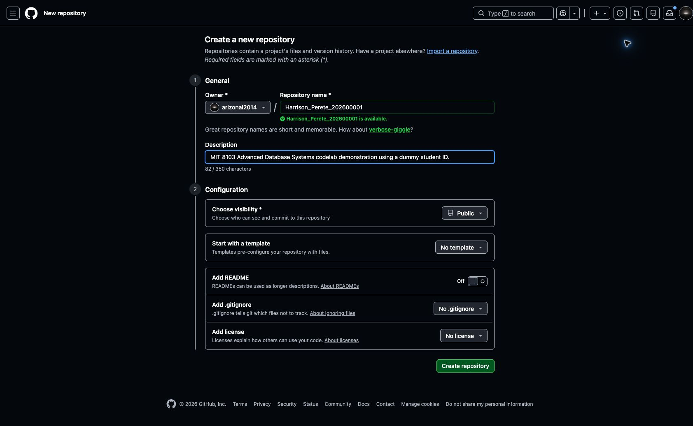
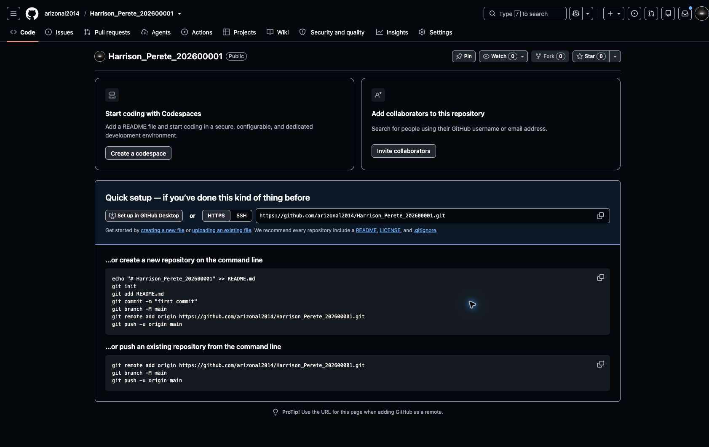

Step 1 Create your assessment repository
What the assessment asks for
Section 5, GitHub Repository Requirements, of the assessment brief asks you to create a private GitHub repository. It should contain your scripts, database models, outputs, screenshots and documentation, added progressively as you work. Section 6 requires the assessor to have access before submission.
We will create the repository first so you have somewhere to save each portfolio activity.
Your names and folder structure
The LMS submission instructions require the submission folder to use Surname_Firstname_StudentID, and uploaded files to use Surname_Firstname_StudentID_DocumentType.
For this demonstration, we will use:
| Detail | Demonstration value |
|---|---|
| First name | Perete |
| Surname | Harrison |
| Student ID | 202600001 — dummy ID for this tutorial |
| Submission folder | Harrison_Perete_202600001 |
| Repository name | Harrison_Perete_202600001 |
| Example filename | Harrison_Perete_202600001_README.md |
Replace the demonstration name and ID with your own. Using the submission folder name for the repository keeps the naming consistent; the brief does not prescribe that exact repository name. Your GitHub username can be different.
Section 5 suggests organising the five portfolios into separate directories. We will build this structure as we continue:
Harrison_Perete_202600001/
├── Harrison_Perete_202600001_README.md
├── portfolio-1-database-design/
├── portfolio-2-query-optimisation/
├── portfolio-3-transactions-concurrency/
├── portfolio-4-nosql/
└── portfolio-5-distributed-cloud/You do not need to create these files or folders yet.
Create a GitHub account or sign in
GitHub stores your project files and records changes to them. A repository is the project space where you keep those files.
If you do not have an account:
- Open GitHub sign-up.
- Follow the registration prompts and choose a username.
- Complete the requested account and email verification.
- Sign in to GitHub.
If you already have an account, sign in and continue below.
What you should see: your signed-in GitHub dashboard, with your account menu in the upper-right corner. You should no longer be on the sign-up page.
Create an empty repository
- Open Create a new repository.
- Under Owner, select your own account.
- Enter your repository name using your own details. Our demonstration uses
Harrison_Perete_202600001. - Optionally enter the description:
MIT 8103 Advanced Database Systems practical portfolio. - Select Private for your assessment repository, as required by Section 5 (make it public as per require instructed). The instructor's teaching repository will be Public so everyone can follow the demonstration.
- Leave Start with a template set to No template, Add README set to Off, Add .gitignore set to No .gitignore, and Add license set to No license.
- Click Create repository.
The demonstration settings below show the name, owner and Public visibility before clicking Create repository. Select your own account as Owner; arizonal2014 is the instructor's GitHub username.

What you should see: your new repository page, with its owner and repository name at the top and a Quick setup section. It is empty because you have not added any files yet.

You can view the demonstration repository. It will gain files as we continue; the screenshot above records how it looked immediately after creation.
Check before continuing
- The repository belongs to your GitHub account.
- Its name uses your own surname, first name and student ID.
- Its visibility is Private for your assessment, or Public for the instructor's demonstration.
- The repository is empty and shows Quick setup.
Keep the repository page open. Continue to Step 2 — Open your workspace in GitHub Codespaces.